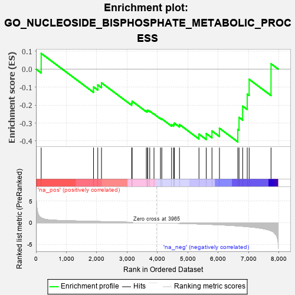

| | | Dataset | 7d |
| Phenotype | NoPhenotypeAvailable |
| Upregulated in class | na_neg |
| GeneSet | GO_NUCLEOSIDE_BISPHOSPHATE_METABOLIC_PROCESS |
| Enrichment Score (ES) | -0.4049566 |
| Normalized Enrichment Score (NES) | -1.059419 |
| Nominal p-value | 0.38303342 |
| FDR q-value | 0.79016703 |
| FWER p-Value | 1.0 |
Table: GSEA Results Summary

Fig 1: Enrichment plot: GO_NUCLEOSIDE_BISPHOSPHATE_METABOLIC_PROCESS
Profile of the Running ES Score & Positions of GeneSet Members on the Rank Ordered List
| PROBE | GENE SYMBOL | GENE_TITLE | RANK IN GENE LIST | RANK METRIC SCORE | RUNNING ES | CORE ENRICHMENT | | 1 | DGAT1 | | | 171 | 1.146 | 0.0872 | No |
| 2 | OXSM | | | 1894 | 0.321 | -0.0991 | No |
| 3 | ACBD6 | | | 2034 | 0.300 | -0.0881 | No |
| 4 | TECR | | | 2156 | 0.284 | -0.0764 | No |
| 5 | ACLY | | | 3149 | 0.130 | -0.1890 | No |
| 6 | PPCS | | | 3165 | 0.127 | -0.1788 | No |
| 7 | ACSL4 | | | 3632 | 0.055 | -0.2322 | No |
| 8 | MCEE | | | 3673 | 0.048 | -0.2328 | No |
| 9 | ABCD1 | | | 3677 | 0.047 | -0.2287 | No |
| 10 | HACD2 | | | 3744 | 0.035 | -0.2337 | No |
| 11 | TPST1 | | | 3884 | 0.013 | -0.2499 | No |
| 12 | PDP2 | | | 4098 | -0.023 | -0.2745 | No |
| 13 | HMGCL | | | 4141 | -0.031 | -0.2769 | No |
| 14 | GCDH | | | 4463 | -0.087 | -0.3090 | No |
| 15 | BPNT1 | | | 4530 | -0.101 | -0.3078 | No |
| 16 | AASS | | | 4552 | -0.106 | -0.3004 | No |
| 17 | COASY | | | 4723 | -0.144 | -0.3082 | No |
| 18 | ACOT8 | | | 5364 | -0.288 | -0.3614 | Yes |
| 19 | MPC1 | | | 5603 | -0.345 | -0.3586 | Yes |
| 20 | PMVK | | | 5792 | -0.403 | -0.3441 | Yes |
| 21 | PPT1 | | | 6038 | -0.485 | -0.3289 | Yes |
| 22 | ACSL5 | | | 6643 | -0.737 | -0.3351 | Yes |
| 23 | MPC2 | | | 6683 | -0.753 | -0.2685 | Yes |
| 24 | KYNU | | | 6802 | -0.816 | -0.2061 | Yes |
| 25 | PANK4 | | | 6953 | -0.907 | -0.1390 | Yes |
| 26 | PANK1 | | | 7016 | -0.948 | -0.0569 | Yes |
| 27 | PANK2 | | | 7736 | -1.866 | 0.0296 | Yes |
Table: GSEA details [plain text format]
Fig 2: GO_NUCLEOSIDE_BISPHOSPHATE_METABOLIC_PROCESS: Random ES distribution
Gene set null distribution of ES for GO_NUCLEOSIDE_BISPHOSPHATE_METABOLIC_PROCESS